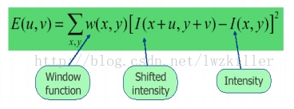
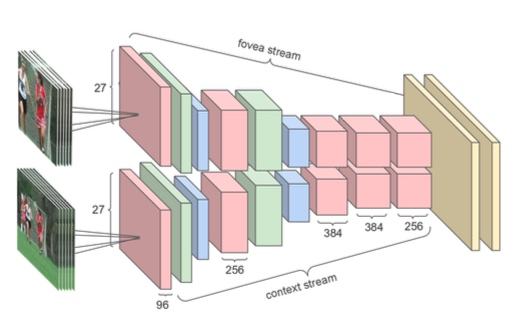
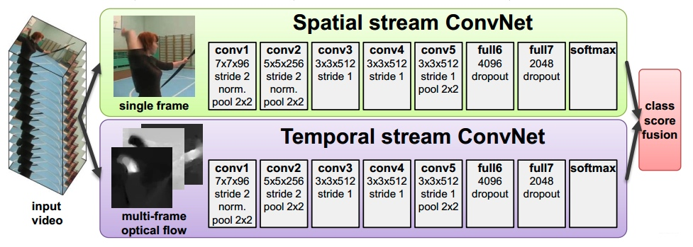
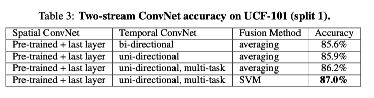
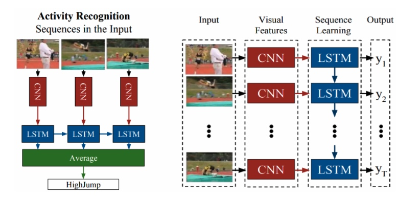
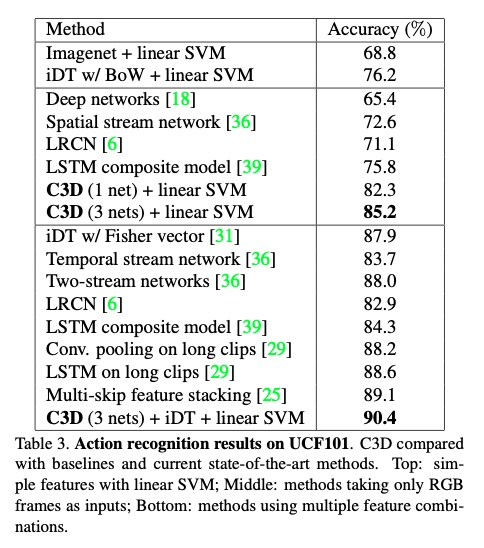

video中行为识别方法
参考：
https://zhuanlan.zhihu.com/p/79521655
https://zhuanlan.zhihu.com/p/103566134 通用行为识别
https://blog.csdn.net/DaGongJiGuoMaLu09/article/details/94628591
参考资料: https://blog.csdn.net/DaGongJiGuoMaLu09/article/details/94628591
有人整理的翻译版本:https://mna12478.github.io/action_9/
1. 传统的有监督的特征提取方法
在深度学习之前，传统的特征的方法的SOTA是iDT 算法
(1) 时空关键点
即检测视频图形中在时空维度上发生剧烈变化的数据，比如运动的轨迹。常见的方法
- Harris角点检测方法
详细介绍参考https://blog.csdn.net/lwzkiller/article/details/54633670 简单地说：
角点：一般是轮廓之间的交点，视角发生变化时候通常具备比较稳定的性质，该点附近区域的像素点无论在梯度方向上还是其梯度幅值上有着较大变化；

u,v是窗口的偏移量，w(x,y)是窗口函数作为权重
算法的基本思想：找到在任意方向上滑动，偏移较大的位置。
然后统计关键点周围的梯度直方图等视觉特征，
(2)密集轨迹iDT算法(improved Dense Trajectories)
《Dense Trajectories and Motion Boundary Descriptors for Action Recognition》和《Action Recognition with Improved Trajectories》
光流：
HOG：灰度图像梯度的直方图
HOF：光流的直方图
MBH：光流梯度的直方图
2.深度学习方法的探索
因为行为识别需要考虑空间和时间两个维度，所以一开始主要是怎么将时间维度融合进去。比较有突破性的进展有:
(1) Single Stream Network
paper: 2014_Large-scale Video Classification with Convolutional Neural Networks
使用数据：sports-1M,主要是关于人运动的一些video; 后来通过迁移学习将top1和top3layer重训应用到ucf101
- 模型结构

single frame: 单线提取特征，最后再将则合格特征融合在一起
early fusion:将相邻的T个帧的信息合并，在第一层filter的时候进行修改，将filter改为ff3*T的
late fusion: 建立两个single frame，之间共享参数，在第一个全连接层的时候进行融合
slow fusion：有点将前两种方式合并的感觉，如图示
- 效率问题
为了解决效率问题，在具体处理的时候，是将原本的一个网路结构拆分成两个:- context stream: 对原始图像做downsample. n/2
- fovea stream。 只保留图像中间的部分(这个也有本身的原图像有关) 
这样整个的参数减少为原来的1/2
- 效果
模型本身中slow fusion版本最好，整体上要比hand-crafted-feature的结果差。主要原因: 对于运动特征的捕捉不够；数据的丰富性问题
(2)two stream network
paper: Two-Stream Convolutional Networks for Action Recognition in Videos
作者:Andrew Zisserman 牛津大学
- model 
包含两个网络分别处理空间和时间维度:
(1)Spatial Net 主要是提取视频的每一帧，其实就是典型的图像分类，可以用图像分类相关的网络结构
(2) temporal net
将提取的光流信息作为输入
multi-task learning
Spatial Net可以用一些预训练的模型，temporal net的输入得是视频。作者用的训练数据集是ucf101和hmdb51，分别有9.5k和3.7k。为了减少过拟合，需要将数据合并成一个。结果

3.深度学习方法
ZZZ: CNN在图像识别中表现的很好，将CNN借鉴过来，相比于图像识别，主要难点以及工作集中在时间维度如何融合，在哪层融合等方面上。
汇总:

(1) LRCN
paper: Long-term Recurrent Convolutional Networks for Visual Recognition and Description
code: https://github.com/garythung/torch-lrcn
基本思想： 1）不再使用传统的光流方法，而是引入RNN结构；（2）将编码解码结构拓展到视频表征领域；（3）为动作识别提出了一个端到端的训练结构。

如上图所示: 设计的是一种编码-解码 网络，通过cnn进行编码，然后rnn进行解码。
(2) C3D
code: https://github.com/hx173149/C3D-tensorflow
paper: 2014 Learning Spatiotemporal Features with 3D Convolutional Networks
中文翻译 https://www.jianshu.com/p/09d1d8ffe8a4
不同于前面将时间维度融合进去原有的模型中，或者是拆分成一个2d的图像+时间维度，3d卷积直接从3d的角度出发。3d卷积与2d卷积的区别:

a)在一个图像上应用2D卷积会产生一个图像。b)在视频卷上应用2D卷积(多个帧作为多个通道)也会产生一个图像。c)在视频卷上应用3D卷积可产生另一个卷，保留输入信号的时间信息。
3d卷积网络。本文中作者的主要结果是:
- 3d卷积结构普遍比2d卷积结构要好
- 找到了一个表现最好的3x3x3的卷积核，这个特征提取器后来被广泛应用于action detection的基础
网络结构：C3D的网络结构：8个卷积、5个池化、2个全连接，最后是一个softmax输出。所有3D卷积的尺寸都是333、步长为1

实验：
- 卷积核的深度3x3xdi。 不同层均匀深度、不同深度。 通过实验发现3x3x3效果最好
- 作者使用sports-1M数据进行训练，每16帧作为一个片段，16
- 在UCF101上的效果

(3) TSF
two stream fusion, 这个主要是基于two stream，摸底不同的融合方法。 其中作者之一就是前面提出two stream network的Andrew Zisserman
链接: http://www.robots.ox.ac.uk/~vgg/software/two_stream_action/
code: matlab
作者提出视频行为识别的主要难点:1)训练数据量较少， 2)temporal信息提取的不够充分。
接着之前的two stream network的一些问题:
1) 融合空间和时间流（这就相当于解决了how和when的问题），空间网络提取视频中的空间依赖性，时间网络提取空间中各位置的周期性运动。因此，将一个特定区域的空间特征图映射到相关的时间特征图就显得非常重要，需要在网络的早期阶段就对二者进行融合（后来 TAL-NET 证明晚融合的效果要更好），以便将相同像素位置的响应对应起来。
2) 对时间网络进行跨时序帧融合，这样长时依赖关系就能够被建模
实验的控制因素：
（1）如何将空间和时间融合
可以简单理解之前分两路相当于是认为时间和空间这两个维度独立，然而实际上他们是有交互影响的，所以更好的方法是在layer的时候就能将信息融合。
作者列举的方法有: sum, max, Concatenation, Conv(Concatenation后再做个变换)，在操作的时候需要将两者的维度转成一样的。而不同的组合方法也会显著影响模型的参数数量。
(2) 在哪个layer进行融合
(3) 时间维度怎么融合

作者提出的改进的网络结构如上图，每一部分都有空间(蓝色)和时间(绿色)维度的融合，
(4) TSN (Temporal Segment Networks)
论文:
[2016] Temporal Segment Networks: Towards Good Practices for Deep Action Recognition
[2017] Temporal Segment Networks for Action Recognition in Videos
简介:
作者之一Yuanjun Xiong， 香港中文大学，MMLAB项目，最后还将相关代码集成到了mmaction上。该方法在2016年的Activity Recognition Challenge上比赛第一。
这篇论文的综述还挺全面的
问题: video action 识别相比与图像识别面对的主要问题:
- long range temporal信息 (当前的一些方法都集中在短期上比如指定10帧)
- 很多model是基于剪裁好的video去学习的，而实际情况下很多视频都是为剪裁的，背景因素干扰很大
- 数据集的有限性，以及计算光流的复杂度
解决方案:
- sparse sampling strategy： 建立了temporal segment network(TSN)。出发点：连续的帧的很多信息是冗余的，稀疏的全局抽样效果反而会更好(zzz:这个可能也要看不同的动作类型吧)。 先将整个video分成固定数目的segments，然后在每个segment上随机的抽取一个snippet。最后将所有snippet的信息进行聚合
- hierarchical aggregating
- 添加了两个新的数据集
具体做法:
(1) segment based sampling: 将视频分割成k段(示意图中k=3),从每段中随机抽取一个，然后计算其RGB frames，光流等其他表征。在本文中作者具体输入的信息有
- RGB图像
- optical flow光流
- warped optical flow
- RGB differences
(2) segment aggregation：经过segment based sampling之后，每个snippet经过卷积网络会产生出预测值 vec=(f1,f2...fN)。需要将所有的snippets的预测结果进行合并
- max pooling: 每个分量取最大
- average pooling
- topk-pooling。 前两种可能会受异常值的影响，topk的方法是对每个分类，先选择出topk个最具有分别能力的snippets。然后对这些snippets再取均值。
- linear weight: \(\sum w_if_i\)认为不同阶段的权重是不同的，而这些权重也作为参数加入到模型中进行学习
- attention weight: 线性的权重认为不同时期的权重对于不同食品内容是一样的，而attention就考虑到不同的视频内容，即 \(g_i = \sum_{k=1}^K A（T_k）f_i^k\)
(3) 训练过程
数据量问题：
a)通过在imagenet上大规模预训练的模型参数作为初始化
b)增加BN 正则化，初第一层外其他所有层增加0均值1标准差的正则化。
c)数据增强
如何应用在untrimmed data中: 基于检测的，先从视频中进行抽样比如1s一个，然后拿一个训练好的TSN model去估计这些片段。
结果可视化 https://github.com/auduno/deepdraw
ActionVLAD
http://rohitgirdhar.github.io/ActionVLAD
《ActionVLAD: Learning spatio-temporal aggregation for action classification》，2017
这篇文章在时空上分别独立提取特征，然后做pooling聚合，采用了一种VLAD(图像检索中的一种特征表示方法)的pooling方法，端到端的训练，主要解决两个疑惑：
1.如何聚合视频帧之间的特征来表示整个视频。
2.在多流网络中(例如two-stream)里面如何整合不同流(双流)的信息
和之前利用池化融合特征的方法完全不同，在最后两个分支输出后，用k为空间的动作词袋直接进行编码。
hiddenTwoStream
twoStream中的光流由于速度问题必须提前计算，本文主要提出了一种无监督结构来生成一组帧的光流。
（5）I3D
2018 Quo Vadis, Action Recognition? A New Model and the Kinetics Dataset
I3D(inception-bn C2D)
(6)slowfast
Kaiming He@facebook
出发点:回到一开始如何考虑时间维度这个问题。C3D是认为是3个维度，作者认为对于视频(x,y,t),时间维度并不能和空间维度等同来看。作者收到生物学方面(视觉系统中视网膜节细胞的)启发，认为慢运动更符合人类感知，所以将运动维度和空间维度分而治之。
空间维度: 空间语义信息变化是很缓慢的。所以建一个slow网络，输入为低帧率
运动维度: 运动要比发生运动的实体来说变化很快。建立fast网络，一个轻量级的网络，输入为高帧率。
github: https://github.com/facebookresearch/SlowFast
近期的一些其他方法
Non-local Neural Networks 2018
CSN
SSN
st-gcn
《Spatial Temporal Graph Convolutional Networks for Skeleton-Based Action Recognition》2018
时空-图卷积 ST-GCN

mmskeleton
一个无监督视频特征提取：
Learning hierarchical invariant spatio-temporal features for action recognition with independent subspace analysis
论文资料
https://github.com/jinwchoi/awesome-action-recognition
https://github.com/cbsudux/awesome-human-pose-estimation
toread
https://www.jianshu.com/p/39fe654ed410
https://zhuanlan.zhihu.com/p/51550622 2017年Activity Recognition Challenge
姿态识别
- 动作识别： https://zhuanlan.zhihu.com/p/132673525
- 身份识别
从识别的问题类型上划分的话，主要有这么几类问题
- 手势识别
- action: 短时间的动作识别
- activity：持续时间较长的行为，比如读书，打电话，打球